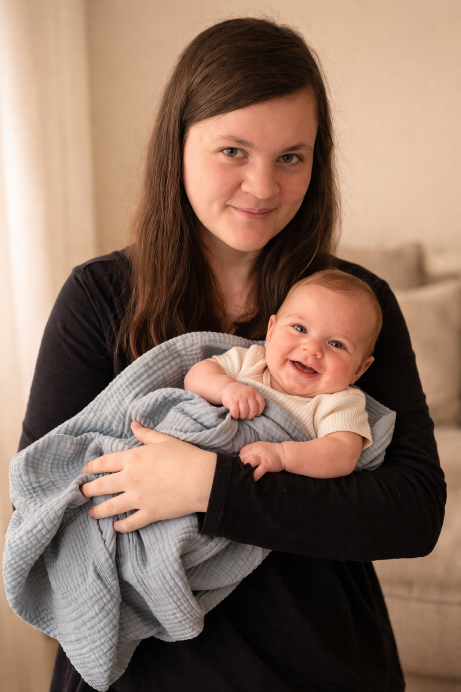
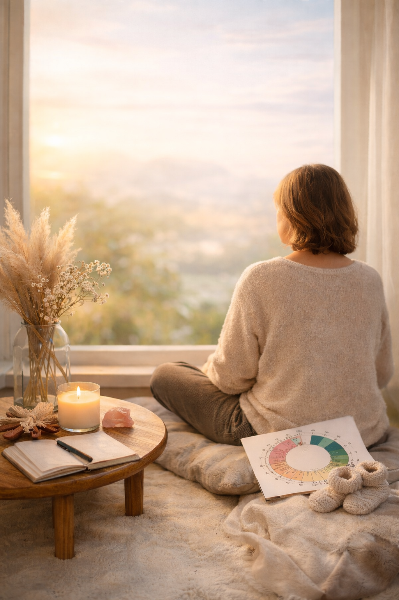
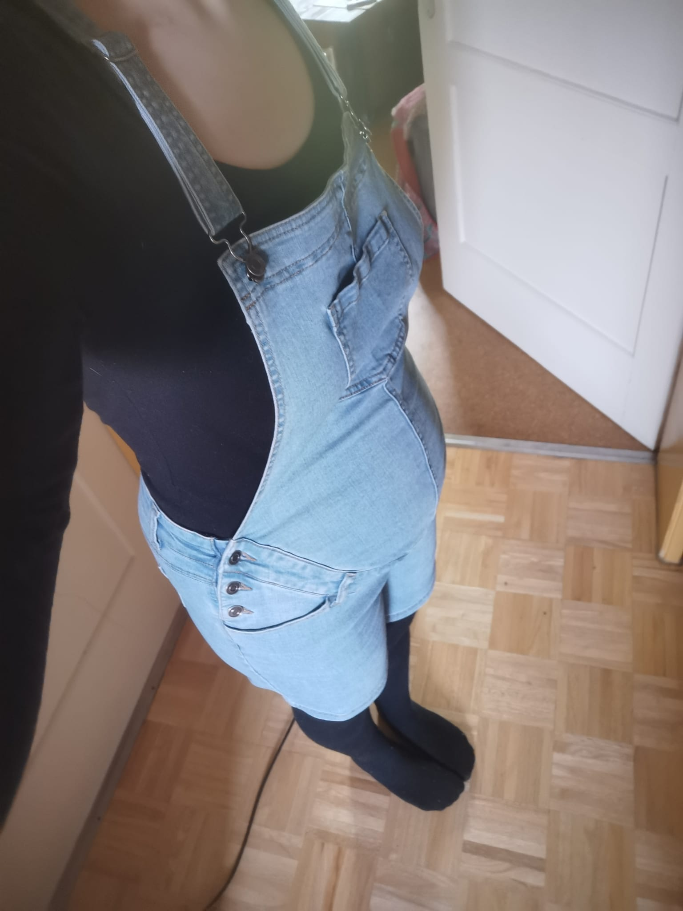
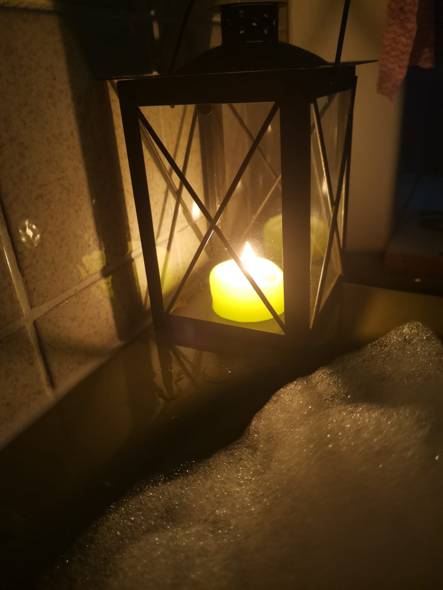

Lichtwesen Doula
Einfühlsame Begleitung für Schwangerschaft, Geburt & Wochenbett
Geburt ist ein Übergang – ein kraftvoller Moment zwischen zwei Welten. Ich begleite dich sicher, gestärkt und verständnisvoll durch Schwangerschaft, Geburt und die erste Zeit mit deinem Baby.
 Jetzt Erstgespräch
Jetzt Erstgespräch
Über mich
Mein Name ist Leonie. Meine eigene Geburtserfahrung hat in mir den Wunsch geweckt, Frauen eine sichere, selbstbestimmte und liebevolle Geburt zu ermöglichen.
Ich begleite Familien mit Herz, Intuition und ganzheitlichem Wissen. Kräuterheilkunde, Rituale und emotionale Begleitung sind wichtige Bestandteile meiner Arbeit.

Kinderwunsch & Planung
Ein Kind beginnt oft als Gefühl. Ich unterstütze dich dabei, Vertrauen in deinen Körper zu entwickeln, Klarheit zu finden und dich innerlich vorzubereiten – in deinem Tempo und ohne Druck.

Schwangerschaftsbegleitung
Du musst diese Zeit nicht allein tragen. Mit Gesprächen, kleinen Ritualen und emotionaler Unterstützung fühlst du dich sicher, getragen und verbunden mit deinem Baby.

Geburtsbegleitung
Während der Geburt bin ich konstant an deiner Seite. Ich halte den Raum, gebe Sicherheit und unterstütze dich, deinen eigenen Weg zu finden – ruhig, intuitiv und stärkend.

Wochenbett & Nachsorge
Nach der Geburt beginnt das echte Ankommen. Ich begleite dich emotional und praktisch, unterstütze beim Stillen, Alltag und Rückbildung, damit du in Ruhe in deiner neuen Rolle wachsen kannst.
Kinderbetreuung
Liebevolle Betreuung deines Babys oder deiner Kinder, damit du schlafen, durchatmen oder Termine wahrnehmen kannst – in Sicherheit und Vertrauen.
 Mehr erfahren
Mehr erfahren
Schweinfurt & Umgebung | Tel: 0157 39643278 | Instagram: @lichtwesen.doula